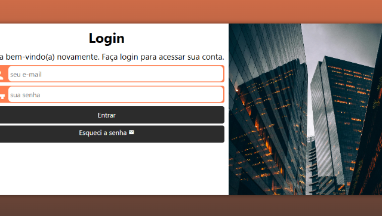
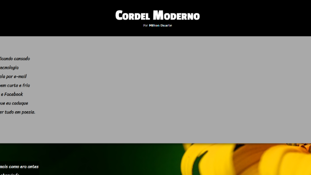
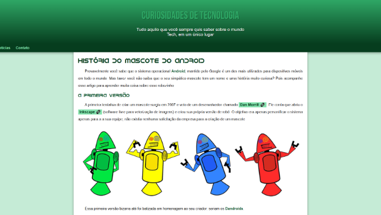

Flappy Cat
Desenvolvido utilizando o Gamemaker, este jogo é inspirado no estilo
clássico de jogos "flappy", Flappy Cat oferece uma experiência
divertida e simples para jogadores de todas as idades.
Ver Projeto
Galaxy Pong
Galaxy Pong é um jogo de Pong com tema espacial, desenvolvido no
GameMaker utilizando GML, com modos para 1 ou 2 jogadores e
diferentes níveis de dificuldade.
Ver Projeto

Space Riders
Um jogo de nave no estilo arcade, desenvolvido no GameMaker
utilizando GML, onde você deve desviar de inimigos e destruí-los
para alcançar a maior pontuação possível.
Ver Projeto

Tela de Login
Uma interface de login funcional e responsiva, desenvolvida com HTML e CSS, projetada para autenticação de usuários com campos de e-mail e senha.
Ver Projeto

Projeto Cordel
Página interativa que apresenta o poema “Cordel Moderno” de Milton Duarte, com efeito de rolagem e design responsivo para leitura fluida em diferentes dispositivos.
Ver Projeto

Projeto Android
Site informativo sobre curiosidades do mundo da tecnologia, com foco na história do mascote Android, utilizando HTML e CSS para criar uma experiência visual agradável e organizada.
Ver Projeto